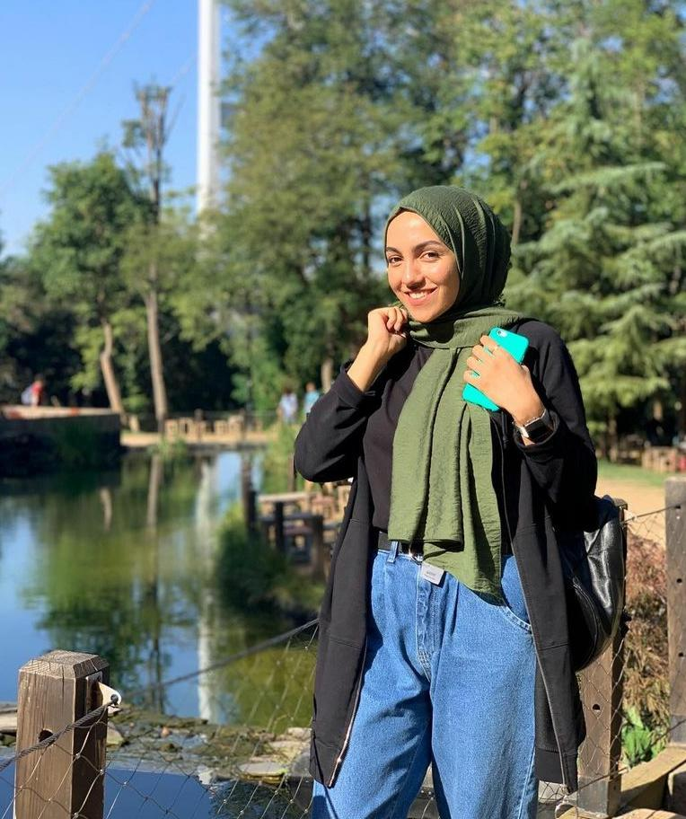

Nur Sena Sancakdar
Merhaba ben Nur Sena Sancakdar, 22 yaşındayım ve İstanbul’da yaşıyorum. Kocaeli Üniversitesi’nde Uluslararası İlişkiler okuyorum. Aynı zamanda İstanbul Üniversitesinde Yönetim Bilişim Sistemleri okuyorum. Decathlonda spor lideri olarak çalışıyorum. Lisanslı basketbol oyuncusuyum. Çocukları çok sevdiğim için, boş zamanlarımda palyaçoluk yapıyorum. Staj için gittiğim Ukrayna’da ingilizce öğretmeni olarak ders verdim. Rusça öğrenmek ve keman çalmak en büyük tutkum. Fotoğraf çekmeyi ve bunları editlemeyi çok seviyorum. Kuzenimin (miray bayram) çok başarılı olacağına inanıyorum. Sevgiler.
Elif Ercan
Merhaba ben Elif ERCAN. 22 yaşındayım ve grafik tasarımcıyım. Bülent ecevit üniversitesinde grafik tasarımı okudum. Mezun olduktan sonra Anadolu üniversitesinde halkla ilişkiler bölümünde okumaya devam ettim. Şuan özel bir şirkette sosyal medya danışmanlığı ve grafik tasarımı yapıyorum, aynı zamanda video çekiyorum (Patronumu hiç sevmiyorum :)). Metroda giderken veya sahilde otururken çizim yapmayı çok seviyorum ve en büyük hobim diyebilirim. Gezmek, seyahat etmek, arkadaşlarımla vakit geçirmek, alışveriş yapmak en çok sevdiğim şeylerdir. İlerleyen zamanlarda çok iyi bi grafik tasarımcı olmak ve daha iyi yerlerde çalışmak istiyorum, şuan için en büyük hayalim bu. Ayrıca bionluk sitesinde ek iş olarak tasarım siparişleri alıp yapıyorum.
Rumeysa Yıldırım

Merhaba, ben Rumeysa Yıldırım. İstanbul, Üsküdar’da yaşıyorum. Aslen Kocaeli’liyim. Kocaeli Üniversitesi’nde Uluslararası İlişkiler bölümü 1. sınıf öğrencisiyim. Üniversitemdeki İşletme Kulübü’nde genel kurul aktif üyesiyim. Ekip arkadaşlarımla çeşitli çalışmalar gerçekleştiriyoruz. Daha önce bir süre palyaçoluk yaptım, bilgi evlerinde sanat (kaligrafi) dersi verdim. Kaligrafi derslerine 6. Sınıfta ablam sayesinde dahil olmuştum. Birkaç yıl sonra sertifikamı aldım ve bundan sonra bilgi evlerinde ders verme fırsatı yakaladım. Sporla uğraşmaktan çok keyif alıyorum, hem sağlık hem de fiziksel açıdan beni çok motive ediyor. Sevdiklerimle vakit geçirmek, farklı yerler görmek, farklı şehirler veya ülkeler gezmek en çok sevdiğim şeylerden. Arkadaşıma (Miray Bayram) eğitim hayatında başarılar diliyorum, teşekkürler :)
Öykü Bayar
Ben Öykü, İstanbul Gelişim Üniversitesi sivil havacılık kabin hizmetleri öğrencisiyim. 20 yaşındayım ve İstanbul’da yaşıyorum. Spor yapmaktan ve kitap okumaktan çok hoşlanırım. İnatçı, kişiye ve olaya göre merhametli, araştırmayı öğrenmeyi seven, yerine göre eğlenceli ve komik bir insan olduğumu düşünüyorum. En sevdiğim özelliğim inatçılığım pes etmemem, en sevmediğim özelliğim de inatçı olup kendi bildiğimi okuyup başka bir şeyi kabullenmemem. Mirayla ilkokuldan beri yürüttüğümüz bir arkadaşlığımız var. 3 kız kardeşiz Miray da 4. kız kardeşimiz oldu. Birlikte geçirdiğimiz günlerde şu anki beni oluşturmamda karakterime kattığı çok güzel özellikler oldu. Alfa-Beta olarak devam eden arkadaşlığımızda mıknatıs gibi -+ olarak birbirimizi çekmeye devam ediyoruz.